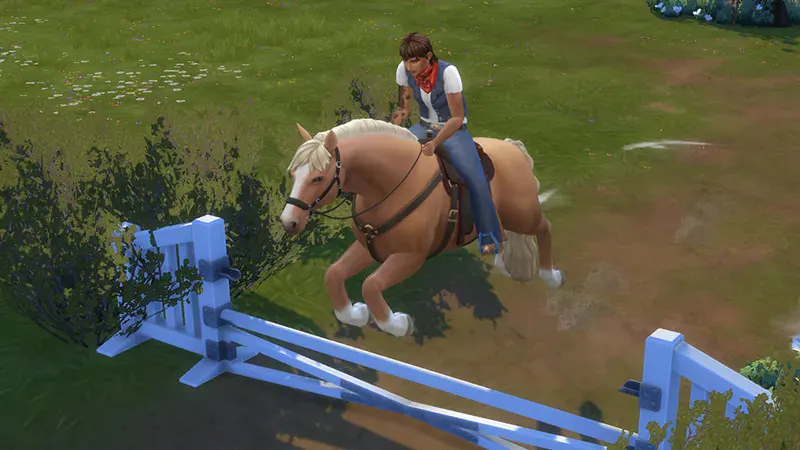

The Sims 4 · Horse Ranch · Gameplay systems · Routing
Horse Riding & Routing
A focused case study on horse movement, routing, and the “running around” interaction, including route path planning and waypoints.

The Sims 4 · Horse Ranch · Gameplay systems · Routing
A focused case study on horse movement, routing, and the “running around” interaction, including route path planning and waypoints.
